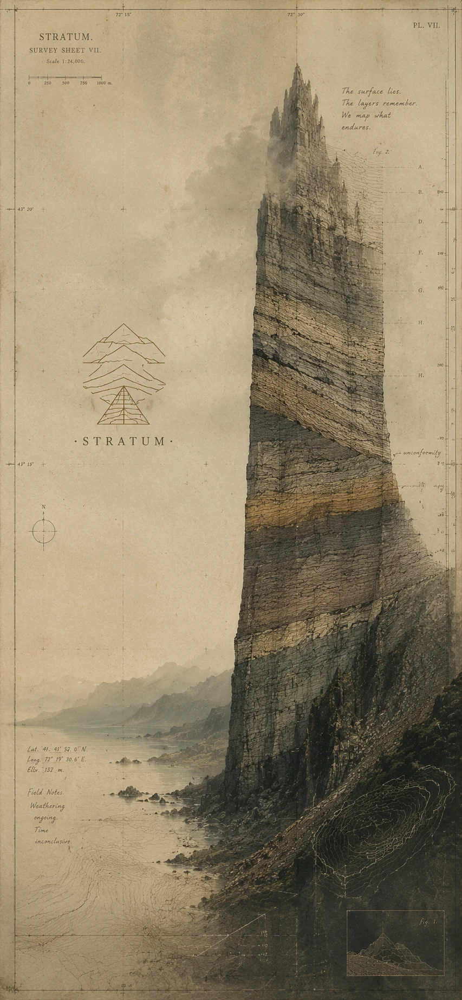

Stratum · Systems Architecture
The dominant failure mode of AI-assisted engineering is not capability. It is topology — and it's a problem you can architect for. A systems architecture for AI-augmented engineering teams: roles, memory tiers, handoff protocols, arbitration surfaces.

"The dominant failure mode of AI-assisted engineering is not capability. It is topology."
Frontier models have increased usable context by two orders of magnitude in three years. Reliability has not followed. Teams that adopted AI agents report the same recurring incidents — drift, contradiction, fabricated APIs, lost decisions — at the same rates they reported a year ago, against models five times more capable. A larger room does not make a meeting more productive. AI-augmented engineering organizations need an explicit cognitive architecture: a layered topology of roles, memory tiers, handoff protocols, and arbitration surfaces — an operating system, but for thought rather than computation.
Read the full white paper (PDF) — the layered architecture, made precise.
Engineering work has been treated as a single role executed by a single agent with a single context. Planning is not implementation; criticism is not creation. The same model becomes reliable through specialization by scaffold, not by prompting harder.
A single conversational buffer collapses working, episodic, and semantic memory into one stream that decays the same way. Reliable systems separate them, give each its own decay function, and route retrieval explicitly.
When state must cross a boundary — across sessions, agents, or humans — transcript-based continuity fails. Continuity is preserved by compressed state packets, not by replaying logs.
An agent permitted to act on intent without a written commitment will drift. An agent that writes the commitment, gets it ratified, and then acts against it is bounded. The spec is the contract that makes verification possible.
A debugging session, a design discussion, and a half-finished spec sit in one buffer, indistinguishable to the model.
By turn forty, a session contains its own contradictions. Asked for "the current approach," the model synthesizes one that may match none of the real decisions.
Fabricated APIs are rarely model error in isolation — they're the model filling an underspecified gap with a plausible completion.
When agents don't coordinate, the human coordinates them. The ceiling on AI-augmented engineering is the human's working memory, not model capability.
This isn't speculative. It's the design basis for Stratum, a macOS workbench and CLI currently in development against it — a deterministic cognitive substrate with probabilistic inference components.
stratum.mazzeleczzare.com →Intentional Fragility · Essay 01
This white paper is the first structural piece in a series about building alone at the edge of what a single developer can responsibly ship: cognitive topology for AI-augmented engineering, the agentic governance a solo builder has to invent for themselves, and the epistemic trust that research and enterprise work both demand — without a team to check your blind spots.
Read it on Intentional Fragility →